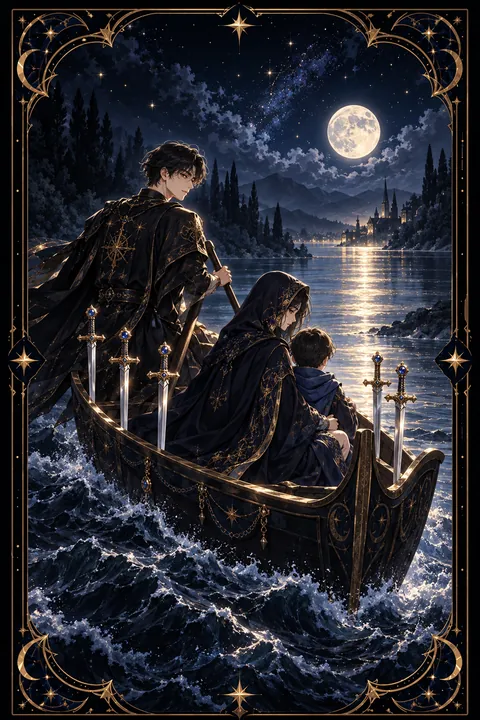

이 게시물은 쿠팡 파트너스 활동의 일환으로, 이에 따른 일정액의 수수료를 제공받습니다.


검 6 카드 — 아픔을 뒤로하고 떠나는 여정
검 6 카드 한눈에 보기
검 6 카드 상징 읽기

동네보살의 카드 그림은 전통 라이더–웨이트 덱의 뜻을 새 그림으로 옮긴 것입니다. 아래 상징 설명은 전통 덱의 그림을 기준으로 합니다.
뱃사공이 긴 장대로 물을 밀어 작은 배를 건너편으로 옮기고 있습니다. 배에는 망토로 몸을 감싼 여인과 아이가 앉아 있으며 뱃머리에는 여섯 자루의 검이 세워져 있습니다.
배의 오른쪽 물결은 거칠게 일렁이고 왼쪽 앞쪽의 물은 잔잔합니다. 이는 혼란과 고통의 시기를 지나 한결 평온한 곳으로 옮겨 가는 과정을 뜻합니다. 뱃사공은 이 전환을 돕는 조력자이며 스스로 노를 젓지 못할 때 기대도 되는 누군가의 손길을 나타냅니다.
고개를 숙인 여인과 아이는 떠나는 길이 마냥 가볍지만은 않다는 것을 보여 줍니다. 배에 실린 검은 지난 상처와 기억을 상징하지만 그 짐을 안고도 배는 멈추지 않고 건너갑니다. 멀리 보이는 건너편 땅은 새로운 시작과 안정이 기다리고 있음을 알려 줍니다. 물결의 대비가 뚜렷할수록 떠나온 자리와 닿을 자리의 차이도 선명해집니다.
검 6 카드 정방향 뜻
정방향 검 6은 힘든 상황을 뒤로하고 더 나은 곳으로 옮겨 가는 전환의 시기를 뜻합니다. 이사, 이직, 부서 이동처럼 실제로 자리를 옮기는 일일 수도 있고 오래 붙들고 있던 괴로움에서 마음이 벗어나는 변화일 수도 있습니다.
이 카드의 변화는 극적이기보다 조용하고 느립니다. 한 번에 모든 것이 좋아지지는 않지만 물결이 조금씩 잔잔해지듯 상황은 분명히 나아지고 있습니다. 떠나는 길에 아쉬움이나 슬픔이 따라오는 것은 자연스러운 일입니다.
지금은 도움을 받아들이는 것도 중요합니다. 뱃사공처럼 곁에서 힘이 되어 주는 사람이 있다면 기대어도 괜찮습니다. 뒤를 돌아보기보다 새로운 곳에서 무엇을 할지 작은 목표 하나를 정해 보세요. 천천히 가더라도 멈추지 않는다면 결국 잔잔한 물가에 닿게 됩니다.
검 6 카드 역방향 뜻
역방향 검 6은 떠나야 할 곳을 떠나지 못하거나 이동이 지연되는 상태를 보여 줍니다. 괴로운 상황인 줄 알면서도 익숙함 때문에 머무르고 있거나 이미 떠났는데도 마음은 여전히 과거에 붙잡혀 있을 수 있습니다.
풀지 못한 문제나 정리하지 못한 감정이 짐처럼 남아 앞으로 가는 속도를 늦추고 있습니다. 준비 없이 서둘러 떠나려다 계획이 틀어지는 모습도 뒤집힌 검 6이 보여 주는 장면입니다.
변화를 두려워하는 마음은 자연스럽지만 계속 강 한가운데 머물 수는 없습니다. 가져갈 것과 내려놓을 것을 구분해 적어 보고 마무리하지 못한 일이 있다면 하나씩 매듭지어 보세요. 필요하다면 믿을 만한 사람에게 도움을 청하는 것도 좋습니다. 짐이 가벼워질수록 배는 다시 앞으로 움직이기 시작합니다.
연애에서 검 6 카드
솔로라면 지난 연애의 아픔에서 벗어나 새로운 마음으로 사람을 만날 준비가 되어 가는 시기입니다. 과거의 기억이 완전히 사라지지 않았더라도 조금씩 앞을 바라보는 것만으로 충분합니다. 여행이나 새로운 환경에서 편안한 인연을 만날 가능성도 있습니다.
지금 곁에 연인이 있다면 힘들었던 시기를 함께 지나 관계가 안정을 찾아가는 흐름입니다. 이사나 새로운 생활 방식처럼 두 사람이 함께 변화를 맞이할 수도 있습니다. 과거의 다툼을 다시 꺼내기보다 앞으로의 계획을 함께 이야기해 보세요. 카드가 뒤집혔다면 지난 관계의 미련이 현재를 흔들고 있지 않은지 살펴보는 것이 좋습니다. 과거를 정리할수록 지금의 사랑이 더 선명해집니다. 새로운 곳에서 함께 만드는 작은 추억들이 관계를 한층 단단하게 묶어 줍니다. 서로의 속도를 맞추며 천천히 가는 것도 잊지 마세요.
재회·속마음 질문에서 검 6 카드
재회 질문에서 검 6이 나오면 두 사람이 이미 서로 다른 방향으로 건너가고 있는 흐름으로 봅니다. 상대는 지난 관계의 아픔을 뒤로하고 새로운 곳으로 옮겨 가는 중일 가능성이 큽니다. 억지로 붙잡기보다 각자의 회복을 존중해 주세요. 카드가 거꾸로 나왔다면 한쪽이나 양쪽 모두 아직 과거에 머물러 있다는 뜻이라 재회의 여지가 남아 있지만 풀지 못한 문제를 먼저 정리해야 같은 자리로 돌아가지 않습니다. 다시 이어지더라도 옛 물가로 되돌아가기보다 둘이 나란히 새 물길을 찾는 방식이어야 오래갑니다. 그러려면 헤어짐의 원인이 된 문제를 솔직하게 짚어 보는 대화가 먼저 필요합니다. 서두르지 않는 연락이 오히려 마음을 여는 계기가 됩니다.
일·금전에서 검 6 카드
일과 직장에서는 이직, 전근, 부서 이동처럼 자리를 옮기는 변화를 뜻하는 카드입니다. 힘들었던 업무 환경에서 벗어나 조금 더 안정적인 곳으로 옮겨 가는 흐름이며 새 환경에 적응하는 데 시간이 걸리더라도 방향은 좋습니다. 조언해 줄 선배나 동료가 있다면 적극적으로 도움을 구해 보세요.
살림 쪽으로는 어려웠던 형편이 서서히 안정을 찾아가는 시기입니다. 큰 변화를 노리기보다 지출을 정리하고 꾸준히 관리하면 형편이 차츰 나아집니다. 거꾸로 나온 카드라면 해결하지 못한 금전 문제부터 정리하는 것이 순서입니다. 새 자리에서는 처음 몇 주 동안 배우는 자세를 보여 주면 적응이 훨씬 빨라집니다. 떠나기 전 인수인계를 깔끔하게 마무리하면 옛 직장과의 인연도 좋게 남습니다.
검 6 카드는 예일까 아니오일까
힘든 상황을 벗어나 더 나은 곳으로 건너간다는 카드여서 느리더라도 긍정적인 예로 봅니다. 역방향이라면 미련이나 풀지 못한 문제가 발목을 잡는 상태라 정리를 마친 뒤에야 답이 열리는 조건부입니다.
자주 묻는 질문
검 6 카드 역방향은 나쁜 뜻인가요?
역방향 검 6은 떠나야 할 곳을 떠나지 못하거나 이동이 지연되는 상태를 보여 줍니다. 괴로운 상황인 줄 알면서도 익숙함 때문에 머무르고 있거나 이미 떠났는데도 마음은 여전히 과거에 붙잡혀 있을 수 있습니다.
검 6 카드가 연애 질문에 나오면요?
솔로라면 지난 연애의 아픔에서 벗어나 새로운 마음으로 사람을 만날 준비가 되어 가는 시기입니다. 과거의 기억이 완전히 사라지지 않았더라도 조금씩 앞을 바라보는 것만으로 충분합니다. 여행이나 새로운 환경에서 편안한 인연을 만날 가능성도 있습니다.
타로 카드는 어떻게 뽑나요?
타로 카드 페이지에서 78장을 섞으면 그중 22장이 펼쳐집니다. 마음이 가는 세 장을 고르면 과거·현재·미래 자리에 놓이고, 한 장씩 뒤집어 자리와 방향에 맞는 풀이를 읽습니다. 정방향과 역방향은 섞는 순간 정해집니다.